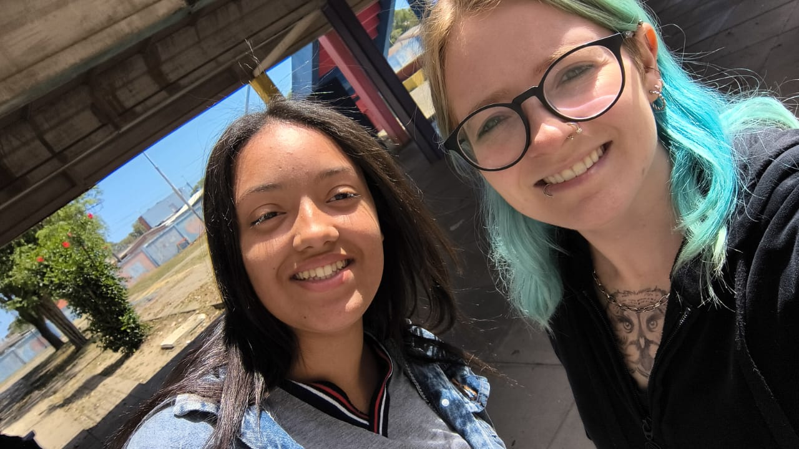

momentos marcantes


Formação: licenciatura em música pela UFSM e segunda formação licenciatura em inglês pela Uniasselvi. Tempo de atuação: 2 anos e meio. Hobby: assistir filmes e séries, ler livros de suspense e investigação, fazer academia, camilhar, ouvir música.
Querida professora Hoje quero dedicar algumas palavras a você, que tem sido uma inspiração e uma parte especial de minha jornada. Aprender inglês com você e muito mas do que entender palavras, regras e expressões, a sua forma de ensinar e leve, diverdida e ao mesmo tempo cheia de sabedoria. Você conseguiu transformar algo que pode ser difícil em momentos agradáveis e cheio de aprendizado. Abrigada por ser essa professora que inspira apoia e transforma. Adoro seu cabelo seu estilo e seu carinho por mim, vou sentir muita saudade de verdade, você e um exemplo de paciencia, amor e dedicação, você merece todo o reconhecimento e carinho do Mundo! Não consigo viver sem você! Espero nos ver di novo! Com muito carinho